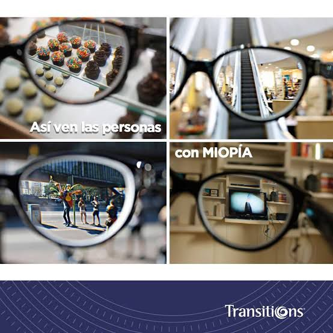
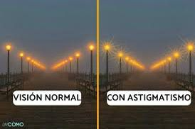

La miopía ocasiona visión borrosa cuando la imagen visual es enfocada al frente de la retina y no directamente sobre ella. Esto se presenta cuando la longitud física del ojo es superior a la longitud óptica.

Los objetos aparecen borrosos tanto de cerca como de lejos, lo que puede dificultar tareas como la lectura, la conducción y el reconocimiento facial. Las líneas rectas pueden verse un poco curvas, y los detalles finos pueden perderse en la neblina visual y generar fatiga en los ojos.
